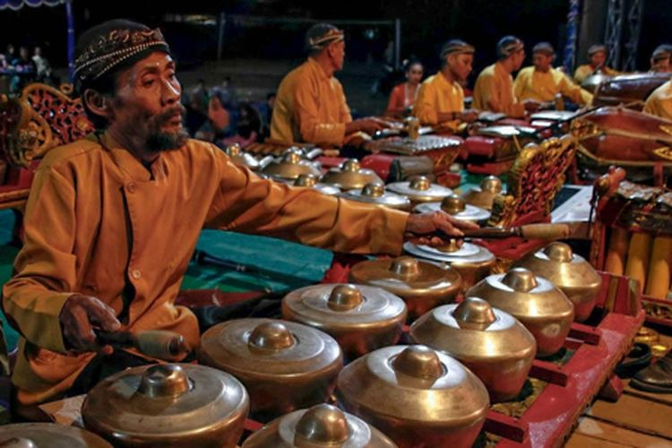
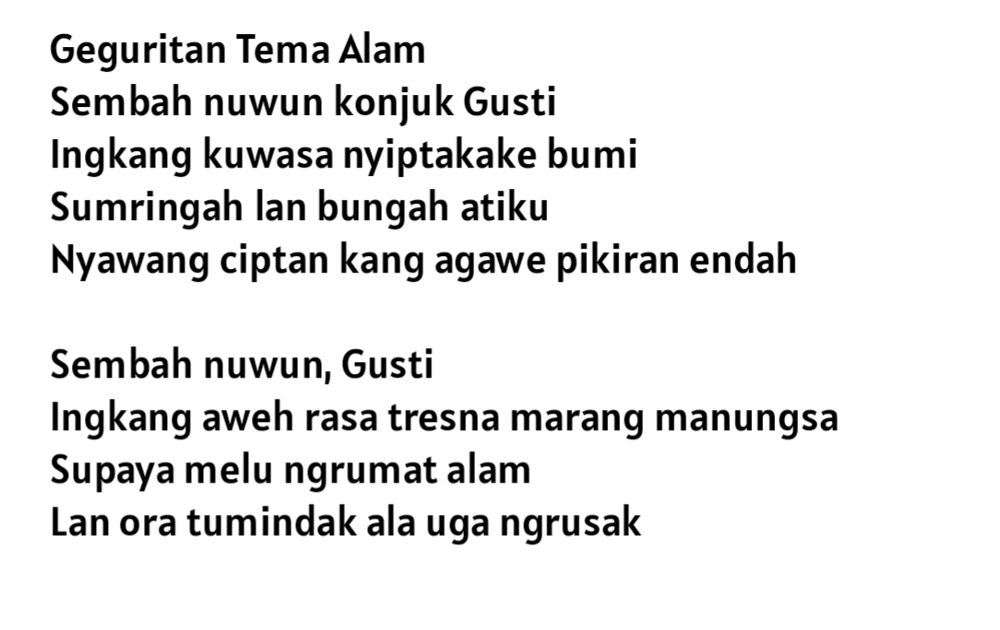
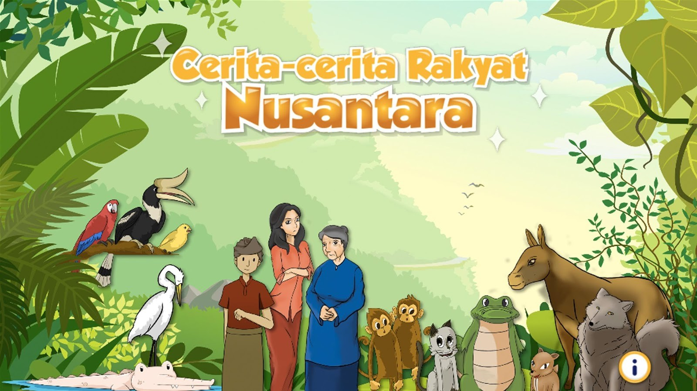
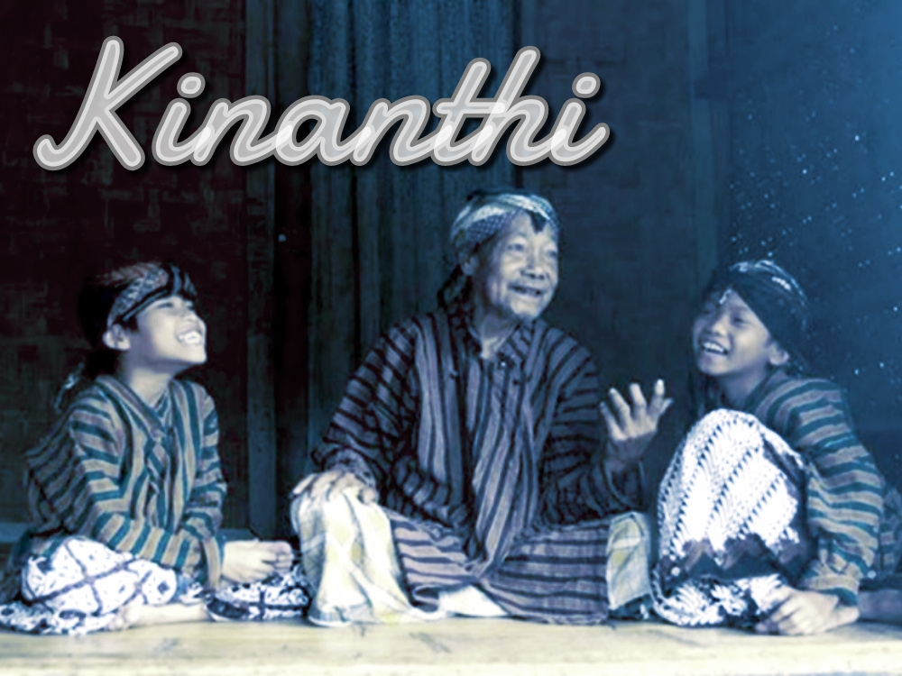

Alat Musik Tradisional (Gamelan)
Gamelan adalah bentuk ansambel musik yang merujuk pada kesatuan intrumen alat musik yang dibunyikan secara bersama-sama. Kata gamelan berasal dari bahasa jawa gamel yang berarti menabuh atau memukul yang kemudian diikuti akhiran an sehingga bermakna kata benda. Pertunjukan gamelan banyak dijumpai pada tradisi di pulau Jawa, Bali, Madura, Lombok dengan berbagai jenis dan ukuran ensemble gamelannya.
Pelajari

Aksara Jawa
Aksara Jawa merupakan aksara yang digunakan sebagai sarana penulisan pada zaman dahulu. Aksara ini disebut juga dengan Hanacaraka, Carakan, dan Dentawyanjana.
Pelajari

Geguritan Bahasa Jawa
Geguritan merupakan karya sastra bentuk puisi dalam bahasa jawa. Geguritan berisi kalimat yang mengandung keindahan makna serta tema yang menarik untuk dibaca. Ciri khas dari geguritan adalah penggunaan bahasa yang sopan dan indah sehingga dapat dinikmati siapa saja.
Pelajari

Cerita Rakyat
Crita rakyat yaiku crita sing wis sumebar ing masyarakat. Kang cacahe ora bisa kapetung, kala mangsane ora bisa digoleki sapa sing nganggit.
Pelajari

Pakaian Adat Tradisional
Busana adat jawa biasa disebut dengan busana kejawen yang mempunyai perumpamaan atau pralambang tertentu terutama bagi orang Jawa yang Menggunakannya.
Pelajari

Tembang Kinanthi
Tembang kinanthi merupakan tembang ke empat dari sebelas judul tembang macapat. Tembang kinanthi menggambarkan kisah anak yang sudah mulai beranjak dewasa.
Pelajari